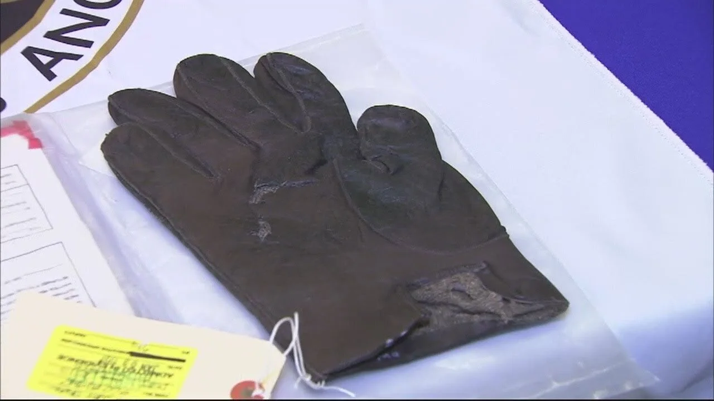
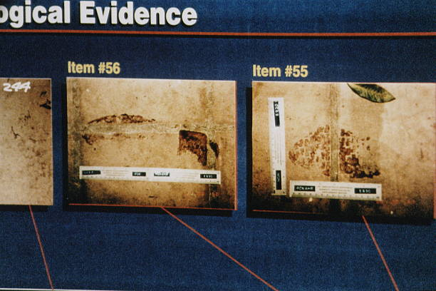

Provas e Controvérsias

Luvas encontradas
As luvas usadas na cena do crime e a tentativa de fazê-las caber em O.J. viraram símbolo do julgamento — "se não couber..."

DNA
Resultados de DNA trouxeram evidências, mas debates sobre contaminação fragilizaram a força probatória.

Sangue e manchas
Amostras de sangue ligadas a Simpson e às vítimas; controvérsias sobre coleta e preservação.
Conduta policial
Acusações de manipulação de provas e racismo institucional impactaram como o júri interpretou as evidências.
Nota: este resumo é informativo; a interpretação das provas envolveu perícias, debates técnicos e estratégias de defesa que influenciaram o veredito.